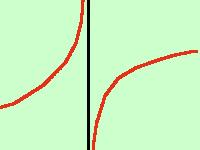
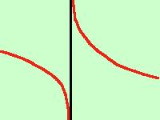

Trovare l'equazione degli asintoti per la funzione
x5 - 1
y = ------------
x3 - 4x
il campo di esistenza e' l'insieme di tutti i valori reali eccetto i valori x=-2, x=0 e x=2 per cui si annulla il denominatore
C.E. = (
- , -2[ U
] -2 , 0[ U ] 0 , +2[ U ]+2 , + ) , -2[ U
] -2 , 0[ U ] 0 , +2[ U ]+2 , + )
calcolo i limiti nei punti di discontinuita':
-
x5 - 1
limx->-2 -------- = 31/0 =
x3 - 4x
-
x5 - 1
limx-> 0 -------- = -1/0 =
x3 - 4x
-
x5 - 1
limx->+2 -------- = 31/0 =
x3 - 4x
quindi le rette
x = -2
x = 0 x=2
sono tre asintoti verticali
Per tracciare al meglio l'andamento della funzione vicino agli asintoti
calcoliamo i limiti destro e sinistro della funzione nei punti di ascissa -2 , 0 e +2
-
Per x tendente a -2-
limite sinistro:
x5 -1
limx->-2 - ---------- =
x3 - 4x
per calcolare un limite di questo genere basta sostituire alla x un valore
un pochino piu' piccolo di -2 (ad esempio -2,1 ) e fare il conto dei segni
(- 2,1)5 -1
---------------------
(- 2,1)3 - 4·(-2,1)
il numeratore e' negativo come
il denominatore quindi
l'espressione e' positiva cioe'
x5 - 1
limx-> -2 - ---------- =
+
x3 - 4x
-
limite destro:
x5 - 1
limx->-2 + ---------- =
x3 - 4x
per calcolare un limite di questo genere basta sostituire alla x un valore
un pochino piu' grande di -2 (ad esempio -1,9 ) e fare il conto dei segni
(- 1,9)5 - 1
---------------------
(- 1,9)3 - 4·(-1,9)
il numeratore e' negativo
mentre il denominatore e' positivo (4 e' maggiore di 1,9 al quadrato) quindi
l'espressione e' negativa cioe'
x5 - 1
limx->-2 + ---------- =
-
x3 - 4x
quindi il risultato e' quello della figura qui sotto

limx->-2- f(x) =
+ x=-2
limx->-2+ f(x) =
-
-
Per x tendente a 0-
limite sinistro:
x5 -1
limx-> 0 - ---------- =
x3 - 4x
per calcolare un limite di questo genere basta sostituire alla x un valore
un pochino piu' piccolo di 0 (ad esempio -0,1 ) e fare il conto dei segni
(- 0,1)5 -1
---------------------
(- 0,1)3 - 4·(-0,1)
il numeratore e' negativo mentre
il denominatore e' positivo quindi
l'espressione e' negativa cioe'
x5 - 1
limx-> 0 - ---------- =
-
x3 - 4x
-
limite destro:
x5 - 1
limx-> 0 + ---------- =
x3 - 4x
per calcolare un limite di questo genere basta sostituire alla x un valore
un pochino piu' grande di 0 (ad esempio +0,1 ) e fare il conto dei segni
(0,1)5 - 1
---------------------
(0,1)3 - 4·(0,1)
il numeratore e' negativo
come pure il denominatore quindi
l'espressione e' positiva cioe'
x5 - 1
limx-> 0 + ----------- =
+
x3 - 4x
il risultato e' quello della figura qui sotto

limx-> 0- f(x) =
- x= 0
limx-> 0+ f(x) =
+
-
Per x tendente a +2-
limite sinistro:
x5 - 1
limx->+2 - ------------ =
x3 - 4x
per calcolare un limite di questo genere basta sostituire alla x un valore
un pochino piu' piccolo di 2 (ad esempio 1,9 ) e fare il conto dei segni
( 1,9)5 - 1
---------------------
(1,9)3 - 4·(1,9)
il numeratore e' positivo mentre
il denominatore e' negativo quindi
l'espressione e' negativa cioe'
x5 - 1
limx->2 - ----------- =
-
x3 - 4x
-
limite destro:
x5 - 1
limx->2 + ----------- =
x3 - 4x
per calcolare un limite di questo genere basta sostituire alla x un valore
un pochino piu' grande di 2 (ad esempio 2,1 ) e fare il conto dei segni
( 2,1 )5 - 1
---------------------
( 2,1 )3 - 4·(2,1)
il numeratore e' positivo
come il denominatore quindi
l'espressione e' positiva cioe'
x5 - 1
limx->2 + ---------- =
+
x3 - 4x
il risultato e' quello della figura qui sotto
limx->2- f(x) =
- x=2
limx->2+ f(x) =
+
Per quanto riguarda l'asintoto orizzontale od obliquo possiamo dire che:
- non esiste l'asintoto orizzontale perche' il limite per x tendente ad infinito vale infinito
(se non sei convinto ripassa le
forme indeterminate)
- non puo' esistere l'asintoto obliquo
perche' il numeratore supera di piu' di un grado il denominatore (vedi
l'ultima parte dell' esercizio precedente )
|